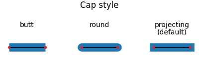

matplotlib._enums¶
Enums representing sets of strings that Matplotlib uses as input parameters.
Matplotlib often uses simple data types like strings or tuples to define a concept; e.g. the line capstyle can be specified as one of 'butt', 'round', or 'projecting'. The classes in this module are used internally and serve to document these concepts formally.
As an end-user you will not use these classes directly, but only the values they define.
-
class
matplotlib._enums.JoinStyle(value)[source]¶ Define how the connection between two line segments is drawn.
For a visual impression of each JoinStyle,
view these docs online, or runJoinStyle.demo.Lines in Matplotlib are typically defined by a 1D
Pathand a finitelinewidth, where the underlying 1DPathrepresents the center of the stroked line.By default,
GraphicsContextBasedefines the boundaries of a stroked line to simply be every point within some radius,linewidth/2, away from any point of the center line. However, this results in corners appearing "rounded", which may not be the desired behavior if you are drawing, for example, a polygon or pointed star.Supported values:
- 'miter'
- the "arrow-tip" style. Each boundary of the filled-in area will extend in a straight line parallel to the tangent vector of the centerline at the point it meets the corner, until they meet in a sharp point.
- 'round'
- stokes every point within a radius of
linewidth/2of the center lines. - 'bevel'
- the "squared-off" style. It can be thought of as a rounded corner where the "circular" part of the corner has been cut off.
Note
Very long miter tips are cut off (to form a bevel) after a backend-dependent limit called the "miter limit", which specifies the maximum allowed ratio of miter length to line width. For example, the PDF backend uses the default value of 10 specified by the PDF standard, while the SVG backend does not even specify the miter limit, resulting in a default value of 4 per the SVG specification. Matplotlib does not currently allow the user to adjust this parameter.
A more detailed description of the effect of a miter limit can be found in the Mozilla Developer Docs
(Source code, png, pdf)

{kind=link}
-
class
matplotlib._enums.CapStyle(value)[source]¶ Define how the two endpoints (caps) of an unclosed line are drawn.
How to draw the start and end points of lines that represent a closed curve (i.e. that end in a
CLOSEPOLY) is controlled by the line'sJoinStyle. For all other lines, how the start and end points are drawn is controlled by the CapStyle.For a visual impression of each CapStyle,
view these docs onlineor runCapStyle.demo.Supported values:
- 'butt'
- the line is squared off at its endpoint.
- 'projecting'
- the line is squared off as in butt, but the filled in area
extends beyond the endpoint a distance of
linewidth/2. - 'round'
- like butt, but a semicircular cap is added to the end of the
line, of radius
linewidth/2.
(Source code, png, pdf)

{kind=link}